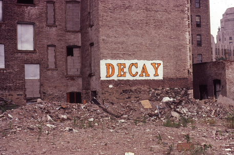

Trenton backgrounder · 16 October 2026 · Back to the section
In 1981 the Fraser Institute of Vancouver published 'Rent Control: Myths and Realities,' edited by Walter Block and Edgar Olsen, a collection of essays on rent control in six countries. Each of its fifteen chapters opens with an unlabeled photograph of a ruined city, and the reader is asked to guess whether the damage came from bombing or from rent control. The book's argument, shared by many economists, is that holding rents below the market price leads owners to spend less on upkeep and investors to build less, so that over many years the housing stock decays. Later research supports part of this argument and qualifies other parts, and the book itself concedes that rent control is not the only cause of slums.
Rent Control: Myths and Realities: International Evidence of the Effects of Rent Control in Six Countries was published by the Fraser Institute in 1981 as number 7 of its Housing and Land Economics Series (ISBN 0-88975-033-5, 335 pages in print). Its editors were Walter Block and Edgar O. Olsen. Contributors include Milton Friedman (with George Stigler), F. A. Hayek, Bertrand de Jouvenel, Sven Rydenfelt of the University of Lund, Frank Kristof on New York City, and Basil Kalymon of the University of Toronto on Canada.
The essays argue that rent control lowers the supply and quality of rental housing; that it raises demand by encouraging people to occupy more space than they would at market rents (Rydenfelt shows this for single adults in Sweden after 1945); that it produces shortages, waiting lists and illegal side payments; that it transfers income arbitrarily, often to tenants who are not poor; and that 'temporary' controls tend to become permanent. A closing chapter by Block replies to common arguments for rent control, such as the claim that landlords hold monopoly power or earn excessive profits.
A free copy of the full book is hosted by the Fraser Institute itself; a copy is also preserved in the Internet Archive's Wayback Machine.
Full text (PDF, Fraser Institute): RentControlMythsRealities.pdf
Archived copy: Wayback Machine, 15 September 2025
Sources: The book (title page, contents, preface) · Library catalog record, University of Orléans · Library catalog record, Prague University of Economics
The preface explains the device: 'Each of the fifteen essays is illustrated with a photograph of either a "bombed-out" or "rent controlled-out" city, otherwise unmarked. The reader is invited to identify the two categories.' Each photograph carries the caption 'Bomb Damage or Rent Control?' and a page reference to the answers.
The answers appear on pages 320 and 321. Eight photographs show bomb damage: Aachen, Germany (two), Hiroshima (three) and Nagasaki (three). Seven show the Bronx and the South Bronx in New York City, which the book labels 'Rent Control.'
The answer page adds an important qualification: 'Unlike bombs, of course, rent controls do not directly destroy property, and they offer no parallel to the human suffering caused by warfare or terrorism.' It states that 'no one contends ... that rent control is necessary to create slums,' and names poverty, neglect and arson as other causes, but it argues that strict, broad and long-lasting control, as in New York, is a sufficient condition for decay, through abandonment followed by fire and vandalism.
The book's photographs came from press agencies (H. Armstrong Roberts, Keystone, Sygma, CP Picture Service, World-Wide Photos) and are under copyright, so they are not reproduced here. They can be seen in the PDF linked above. The photographs below are different images, in the public domain or under free licenses, chosen to show the same kinds of places. Their captions state what each one actually shows.

Sources: The book, preface and pp. 320–321
Assar Lindbeck, a Swedish economist who called himself a social democrat, wrote in The Political Economy of the New Left: An Outsider's View (New York: Harper & Row): 'Next to bombing, rent control seems in many cases to be the most efficient technique so far known for destroying cities.' The Block and Olsen volume quotes him twice, in two different wordings. Rydenfelt's chapter gives: 'In many cases rent control appears to be the most efficient technique presently known to destroy a city—except for bombing.' The answer page gives the 'next to bombing' wording and dates it to 1971.
Unconfirmed: the page number 39 appears only in quotation collections derived from Wikiquote; I could not examine the 1971 or 1972 edition. The book's own note cites the Harper & Row edition of 1972 without a page number, and the answer page says 1971. The two wordings probably reflect translation from Swedish, but I could not confirm which is Lindbeck's own English.
Sources: The book, pp. 213, 230, 320 and bibliography · Research Institute of Industrial Economics (IFN), Lindbeck's institute, quoting him · Quotation collection (page 39)
In early 1989 Vietnam's foreign minister, Nguyen Co Thach, told a news conference in New Delhi that a 'romantic conception of socialism' had damaged Vietnam's economy after the war. According to a Journal of Commerce report, he said that house rents had been kept so low that the houses of Hanoi had fallen into disrepair, and added: 'The Americans couldn't destroy Hanoi, but we have destroyed our city by very low rents. We realized it was stupid and that we must change policy.'
The report was reprinted by Daniel Seligman in his 'Keeping Up' column in Fortune on 27 February 1989, under the headline 'Rent Control: It's Worse Than Bombing.' Reason magazine described the same Fortune item in June 1989, with slightly different wording ('via very low rents'). I could not see the original Journal of Commerce article or the Fortune page; the quotation is confirmed through these two independent later sources.
Sources: Walter Block, 'Rent Control,' Concise Encyclopedia of Economics (Econlib) · Reason, June 1989
A rental building earns rent and costs money to run: maintenance, repairs, heat, insurance, interest and property tax. An owner spends on upkeep only when the spending is expected to pay for itself through higher rent, lower vacancy or a higher sale price. A legal ceiling on rent breaks this link. If the rent cannot rise, a new roof or new wiring cannot be recovered from the tenant, and the rational owner spends only what the law and the courts require. When controlled rent falls below operating cost, the owner has reason to stop paying taxes and abandon the building, which is the process the book describes in the Bronx.
Controls also discourage new building. Investors compare the expected return of a new apartment building with other uses of their money. If they expect future rents to be capped, they build less, or they build housing for sale rather than for rent. With fewer vacancies, tenants stay longer in units that no longer suit them, and newcomers pay more in the uncontrolled part of the market.
A heavy property tax works through the same channel from the cost side. The tax is charged on value whether or not the owner earns a profit, so it reduces the net income from any building and the return on any improvement that raises the assessment. Where the tax is very high relative to rents, it can make upkeep unprofitable in the same way a rent ceiling does. The two policies together, a capped rent and a rising tax, squeeze the owner from both sides.
Sources: Friedman and Stigler, Hayek and Paish chapters in the book · Block, 'Rent Control,' Econlib
The photograph comparison is a rhetorical device, not evidence of cause. A picture of a ruined block in the Bronx cannot show whether rent control, arson for insurance, the loss of factory jobs, the movement of middle-class families to the suburbs, the cutting of fire services in the 1970s or the concentration of poverty caused the abandonment. Historians of the South Bronx usually stress several of these causes together. The book itself grants that rent control is not necessary for slums to form.
Among economists, the core claim has broad support: in a 1990s survey cited by later writers, a large majority agreed that a ceiling on rents reduces the quantity and quality of housing. Richard Arnott, in 'Time for Revisionism on Rent Control?' (Journal of Economic Perspectives, 1995), argued that the harsh first-generation controls of New York differ from the milder second-generation controls adopted later, which allow fixed annual increases, exempt new buildings and permit higher rent when a unit becomes vacant. He held that the evidence against such milder controls was weaker than often assumed.
More recent work has found both sides of the trade-off. Rebecca Diamond, Tim McQuade and Franklin Qian studied the extension of rent control in San Francisco in 1994 (American Economic Review, 2019). Tenants in controlled buildings were more likely to stay in their homes and in the city, but landlords reduced the supply of rental housing in the affected buildings by 15 percent, through conversion to condominiums and redevelopment, which raised rents across the city by about 5 percent. The study supports the book's claim about supply while showing that controls do give real benefits to the tenants who hold controlled units.
Walter Block's broader views, including his later writings on discrimination and markets, have drawn strong criticism. That criticism does not by itself refute the economic evidence on rent control, which rests on many other authors as well.
Unconfirmed: the description of the causes of the South Bronx decline is general and not checked against a specific historical source here. The size of the majority in the 1990s survey of economists was not checked.
Sources: Arnott, Journal of Economic Perspectives, 1995 · Diamond, McQuade and Qian, American Economic Review, 2019 · NBER working paper version · Burling, William & Mary Property Rights Journal (survey citation)